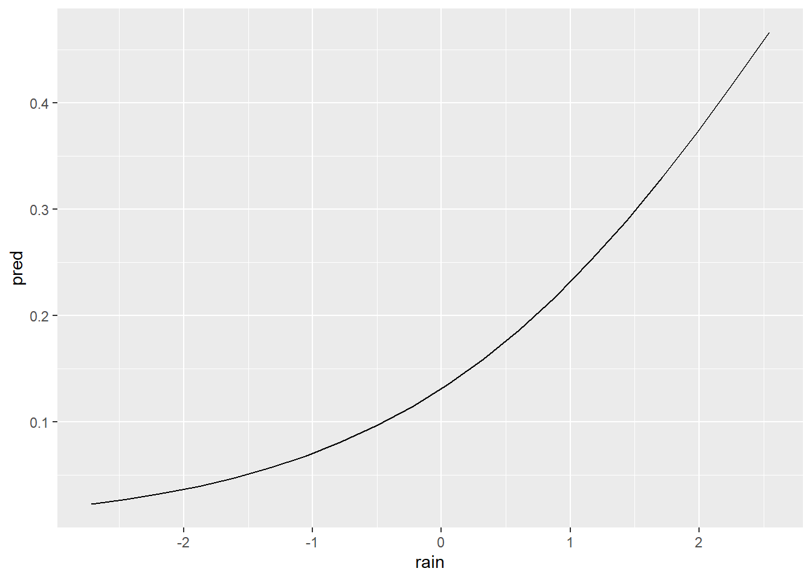

Code
library(spOccupancy)
library(ggplot2)
library(patchwork)On this page, we’ll start expanding on the intercept-only occupancy model from Occupancy Models: The basics by injecting some biology into our etosha elephant model.
As before, we’ll use spOccupancy to fit the model. For visualisation, we’ll also use ggplot2 and patchwork (which lets you combine multiple ggplots into one).
library(spOccupancy)
library(ggplot2)
library(patchwork)On the previous page, we introduced a simple occupancy model to understand the basic structure. Now, we’ll gradually increase the complexity—starting by adding covariates. These are also called explanatory variables, independent variables, or several other names (statistical terminology can be a mess).
Let’s revisit our simple occupancy model:
\[ z_i \sim \text{Bernoulli}(\psi_i) \tag{State Stochastic} \]
\[ logit(\psi_i) = \beta_0\\ \tag{State Deterministic} \]
\[ y_{i,j} \sim Bernoulli(p_{i,j} \times z_i)\\ \tag{Observation Stochastic} \]
\[ logit(p_{i,j}) = \alpha_0 \tag{Observation Deterministic} \]
I’ve included the tags on the right to help distinguish the two types of equations. Stochastic refers to the parts of the model that deal with randomness. Deterministic refers to the parts that explain why something happens. The state model explains whether a species is present at a site, and the observation model explains whether we detect it.
In this section, we’ll start by adding covariates to the deterministic parts, arbitrarily starting with the observation model.
A quick reminder: \(y\) is indexed by both \(i\) (site) and \(j\) (survey). This is important because it allows us to include covariates that vary by both site and survey, not just by site. For example:
This means we can include variables that change across surveys, as long as we measured and recorded them.
These survey-varying covariates represent conditions that might affect how likely we are to detect the species. If you’re using cameras, maybe fog reduces detection. If you’re doing visual surveys, maybe time of day matters. These variables help us model the variables that affect detection probability.
I’ll simulate a new dataset with a bit more data to work with: 64 sites, each surveyed three times. This time, I’ll include a detection covariate; rainfall.
Note that the values for rainfall are centred on zero. You don’t need to worry about the details for now - you don’t need to do this but you can if you want to. For now: the higher the value of rain, the more rainfall there was in that site, on that survey.
Here’s what the data looks like:
set.seed(1234)
dat <- simOcc(J.x = 8,
J.y = 8,
n.rep = rep(3, times = 8 * 8),
beta = c(1),
alpha = c(-2, 0.5))
obs <- dat$y
det_cov <- dat$X.p[,,2]
df <- data.frame(
survey = rep(1:3, each = 64),
cov = c(det_cov[,1], det_cov[,2], det_cov[,3]),
y = c(obs[,1], obs[,2], obs[,3])
)
p1 <- ggplot(df) +
geom_boxplot(aes(x = factor(survey), y = cov)) +
geom_jitter(aes(x = factor(survey), y = cov),
width = 0.2, height = 0) +
labs(x = "Survey", y = "Rainfall") +
theme_minimal()
p2 <- ggplot(df) +
geom_jitter(aes(y = factor(y), x = cov),
alpha = 0.4, width = 0, height = 0.1) +
labs(x = "Rainfall", y = "Elephant detection") +
theme_minimal()
obs_long <- as.data.frame(obs)
colnames(obs_long) <- paste0("Survey_", 1:ncol(obs_long))
obs_long$Site <- 1:nrow(obs_long)
library(tidyr)
obs_long <- pivot_longer(obs_long,
cols = starts_with("Survey"),
names_to = "Survey",
values_to = "Detection")
obs_long$Survey <- factor(obs_long$Survey, levels = paste0("Survey_", 1:ncol(obs)))
obs_long$Detection <- factor(obs_long$Detection, levels = c(1, 0), labels = c("Detection", "No detection"))
p3 <- ggplot(obs_long, aes(x = Site, y = Survey, fill = Detection)) +
geom_tile(color = "white") +
scale_fill_manual(values = c("Detection" = "darkgreen", "No detection" = "lightgrey")) +
labs(x = "Site", y = "Survey") +
theme_minimal() +
theme(legend.position = "bottom")
design <- "
AB
AB
CC
"
p1 + p2 + p3 + plot_annotation(tag_levels = "A", tag_suffix = ")") + plot_layout(design = design)
A) shows the amount of rainfall across each survey. Each point represents a site in a given survey. B) shows rainfall plotted against whether or not an elephant was detected. C) shows the detection history, with detections coloured green and non-detections in grey.
Notice anything?
In A), we can see that rainfall varies widely across the 64 sites in each survey, with a possible peak in survey 2.
In B), it looks like elephants might be detected more often when there’s more rainfall.
In C), we see that detections usually happen in just one survey per site, with no detection in the others. Remember the closure assumption; we assume that if elephants were detected once, they were present during all surveys at that site.
Now consider B) more carefully. How confident are you that rainfall influences detection probability? If you think it does, how strong is that effect? Can you say exactly how strong it is?
You probably can’t, and that’s where we need statistics.
Let’s add rainfall as a covariate in the model. I’ll reuse the basic model structure from the previous page but now include rainfall as a detection covariate.
Just like on the previous page, we need to include our datasets in a list. If you’re still unsure what a list is in R, think of it like a folder on your computer. You can add lots of different files to a folder—any type of file—and they’re all “tied together” by being in the same place. A list in R works the same way.
The complication now is that I have two datasets. One for my detection history matrix and another for the rain covariate. To include both, I’m going to do something that might seem a little strange at first. I’ll create a list for the detection covariate and then include that list inside our main etosha list. That gives us a list within a list.
Why? Because we might want to add more than one detection covariate later. Even though it feels redundant now, this structure makes it easier to expand the model in the future.
# Note you wouldn't need to do the dat$X.p[,,2] bit
# That's just because the data is simulated.
det.covs <- list(rain = dat$X.p[,,2])
etosha <- list(
y = dat$y,
det.covs = det.covs
)And with that, we’re ready to move on to modelling.
Here are a few things to note about the model specification:
occ.formula = ~ 1 corresponds to the equation
\[
\text{logit}(\psi_i) = \beta_0
\]
This is an intercept-only occupancy model, meaning we are not including any covariates for the probability that a site is occupied.
det.formula = ~ rain corresponds to the equation
\[
\text{logit}(p_i) = \alpha_0 + \alpha_1 \times \text{Rain}_i
\]
This means we are modelling detection probability as a function of rainfall. The model includes both an intercept (\(\alpha_0\)) and a slope for rain (\(\alpha_1\)).
We specify that all the data needed for the model is contained in the list called etosha (think of it like a folder that holds everything in one place).
The remaining arguments (such as n.chains) control how the Bayesian model is run. You can ignore these for now.
fit <- PGOcc(
# The state model (i.e. what % that elephants are present?)
# ~ 1 means we want an intercept only model (no covariates)
occ.formula = ~ 1,
# The observation model (i.e. what % that we see elephants if present?)
det.formula = ~ rain,
# Our carefully formatted dataset
data = etosha,
# Details to get the machinery to run that we'll ignore for now
n.chains = 4,
n.samples = 2000,
n.burn = 200,
verbose = FALSE)Now that we’ve fit the model to the data, we can see what we’ve learned.
Compared to the model on the previous page, we now have additional output under Detection (logit scale). Specifically, we have estimates for both (Intercept) and rain. These correspond to \(\alpha_0\) and \(\alpha_1\) in our detection model:
\[ \text{logit}(p_i) = \alpha_0 + \alpha_1 \times \text{Rain}_i \]
If we want, we can substitute in the estimated values (rounded to two decimal places) and rewrite the model like this:
\[ z_i \sim \text{Bernoulli}(\psi_i) \tag{State Stochastic} \]
\[ \text{logit}(\psi_i) = 1.88 \tag{State Deterministic} \]
\[ y_{i,j} \sim \text{Bernoulli}(p_{i,j} \times z_i) \tag{Observation Stochastic} \]
\[ \text{logit}(p_{i,j}) = -1.89 + 0.69 \times \text{Rain}_i \tag{Observation Deterministic} \]
This final equation lets us calculate detection probabilities for different rainfall values. For example, when \(\text{Rain} = 1\) (which corresponds to heavy rainfall in this dataset), we get:
\[ \text{logit}(p) = -1.89 + 0.69 \times 1 = -1.2 \]
To convert this logit value back to a probability, we apply the inverse logit (also called the logistic function):
\[ p = \frac{1}{1 + \exp(-(-1.20))} = \frac{1}{1 + \exp(1.20)} = 0.23 = 23\% \]
Or we could just do plogis(-1.89 + 0.69 * 1).
When \(Rain = 0\) (moderate rainfall), the logit becomes -1.89, which converts to a detection probability of about 13%.
This process, whereby we plug in a covariate value to make a prediction, is something we can repeat for many values of rain. Doing so allows us to build the predicted relationship that shows how detection probability changes with rainfall.
Next, we’ll create that prediction curve and visualise the effect of rainfall on detection.
To visualise the relationship between rainfall and detection probability, we first create a sequence of Rain values. Rather than calculating one at a time as we just did, we’ll use the seq() function to generate a smooth range of values between the minimum and maximum rainfall in our dataset. Here, we use 20 points to draw a smooth line, but you could choose any number depending on the level of detail you want.
rain <- seq(from = min(det.covs$rain),
to = max(det.covs$rain),
length.out = 20)
rain [1] -2.71815687 -2.44127881 -2.16440076 -1.88752271 -1.61064465 -1.33376660
[7] -1.05688855 -0.78001049 -0.50313244 -0.22625439 0.05062367 0.32750172
[13] 0.60437977 0.88125783 1.15813588 1.43501393 1.71189199 1.98877004
[19] 2.26564809 2.54252615Now that we have our sequence of rainfall values, we want to calculate the predicted detection probability for each one. Because R works with vectors (columns of values), we can apply our model equation to the entire sequence in one step.
pred <- plogis(-1.89 + 0.69 * rain)
pred [1] 0.02263134 0.02726568 0.03281714 0.03945308 0.04736516 0.05677017
[7] 0.06790956 0.08104689 0.09646267 0.11444547 0.13527876 0.15922259
[13] 0.18649040 0.21722152 0.25145143 0.28908330 0.32986526 0.37337882
[19] 0.41904309 0.46613767This gives us a predicted detection probability for each rainfall value. That’s useful, but a raw table of numbers wouldn’t be very effective in a thesis or presentation. It’s far clearer to visualise this relationship in a figure.
To do that, we combine the rainfall values and their corresponding predicted probabilities into a new dataset and then plot the relationship using ggplot2.
df <- data.frame(
pred,
rain
)
ggplot(df) +
geom_line(aes(x = rain, y = pred))
The resulting figure makes it much easier to interpret the model. We can now clearly see that detection probability increases with rainfall.
We can also tidy up the plot to make it more visually effective, by doing relatively small things like adjusting axis labels, converting probabilities to percentages, and applying a clean theme.
ggplot(df) +
geom_line(aes(x = rain, y = pred)) +
scale_y_continuous(labels = scales::percent,
limits = c(0,1)) +
theme_minimal() +
labs(x = "Mean rainfall",
y = "Predicted detection\nprobability of elephants")From the plot, it looks like elephants are more likely to be detected when it rains. If this were real data, we might start discussing ecological explanations. But here’s a key point:
We should have thought about this before fitting the model.
Interpreting results after seeing them and retroactively inventing explanations is risky. It’s called HARKing; Hypothesising After the Results are Known and it’s a form of scientific misconduct. It leads to misleading conclusions and reduces the credibility of research. Don’t do it. Even if it’s just for your own integrity.
Here, the data are simulated, so the stakes are low. The goal is to understand the modelling process. But in real research, it’s essential to define your question, hypotheses and state your predictions before doing the analysis. This starts going down the road of pre-registration but I won’t touch on that here.
So while visualising and interpreting your model is valuable, doing so responsibly is just as important.
The figure we created is a good start, but it’s missing something important: uncertainty.
If we were using frequentist statistics, we’d include 95% confidence intervals. But in the Bayesian framework, confidence intervals don’t exist. Instead, we use credible intervals.
Here’s the formal definition of a 95% credible interval:
There is a 95% probability that the true parameter value lies within the interval range, given the data and model.
This contrasts with frequentist confidence intervals, whose definition is more convoluted and often misunderstood. In fact, credible intervals behave exactly the way most people think confidence intervals do. I’ll explain the Bayesian framework more fully in a later section but for now, just trust me that credible intervals are more intuitive and arguably more useful.
The model summary includes everything we need. The 2.5% and 97.5% columns from the summary output give us the lower and upper bounds of the credible interval for each parameter.
summary(fit)
Call:
PGOcc(occ.formula = ~1, det.formula = ~rain, data = etosha, n.samples = 2000,
verbose = FALSE, n.burn = 200, n.chains = 4)
Samples per Chain: 2000
Burn-in: 200
Thinning Rate: 1
Number of Chains: 4
Total Posterior Samples: 7200
Run Time (min): 0.0182
Occurrence (logit scale):
Mean SD 2.5% 50% 97.5% Rhat ESS
(Intercept) 1.8753 0.9465 0.3078 1.772 4.0465 1.0516 349
Detection (logit scale):
Mean SD 2.5% 50% 97.5% Rhat ESS
(Intercept) -1.8872 0.2946 -2.4610 -1.8939 -1.2939 1.0165 1038
rain 0.6930 0.2384 0.2328 0.6877 1.1801 1.0025 2604To incorporate these into our plot, we repeat the prediction process we used earlier but this time, we use the lower and upper parameter estimates to calculate the corresponding detection probabilities. These will form the bounds of our uncertainty ribbon.
One important note: you do not need to multiply the standard error by 1.96 (as we did in BI3010). That approach belongs to the frequentist framework. With Bayesian models, we work directly with the posterior distributions and their quantiles, no extra calculation needed.
Let’s do just that:
df$low <- plogis(-2.4610 + 0.2328 * df$rain)
df$upp <- plogis(-1.2939 + 1.1801 * df$rain)
df pred rain low upp
1 0.02263134 -2.71815687 0.04336427 0.01096960
2 0.02726568 -2.44127881 0.04611831 0.01514457
3 0.03281714 -2.16440076 0.04903828 0.02087495
4 0.03945308 -1.88752271 0.05213304 0.02871039
5 0.04736516 -1.61064465 0.05541172 0.03936862
6 0.05677017 -1.33376660 0.05888379 0.05376451
7 0.06790956 -1.05688855 0.06255900 0.07302436
8 0.08104689 -0.78001049 0.06644741 0.09846565
9 0.09646267 -0.50313244 0.07055932 0.13151304
10 0.11444547 -0.22625439 0.07490526 0.17351714
11 0.13527876 0.05062367 0.07949599 0.22545433
12 0.15922259 0.32750172 0.08434241 0.28752905
13 0.18649040 0.60437977 0.08945559 0.35877811
14 0.21722152 0.88125783 0.09484663 0.43685701
15 0.25145143 1.15813588 0.10052670 0.51819600
16 0.28908330 1.43501393 0.10650691 0.59858193
17 0.32986526 1.71189199 0.11279825 0.67399363
18 0.37337882 1.98877004 0.11941156 0.74135968
19 0.41904309 2.26564809 0.12635738 0.79895748
20 0.46613767 2.54252615 0.13364590 0.84638633Once we’ve calculated the lower and upper bounds, we can visualise the uncertainty using geom_ribbon() in ggplot2. This shaded area gives a clear, intuitive representation of the uncertainty around our predictions.
ggplot(df) +
geom_line(aes(x = rain, y = pred)) +
geom_ribbon(aes(x = rain, ymin = low, ymax = upp),
alpha = 0.3) +
scale_y_continuous(labels = scales::percent,
limits = c(0,1)) +
theme_minimal() +
labs(x = "Mean rainfall",
y = "Predicted detection\nprobability of elephants")
The result is a publication- or thesis-ready figure: a smooth line showing the predicted detection probability as rainfall increases, surrounded by a shaded band representing the credible interval.
Let’s increase the complexity by including multiple covariates in our simulation. We’ll assume that tree height and average temperature affect whether or not a site is occupied, where elephants prefer taller trees and cooler conditions. As before, rainfall will influence detection probability.
Technical note: To create the figures below, I needed to slightly restructure the data. The object used for plotting has one row per survey, with three surveys per site. The occupancy covariates (
treeandtemp) do not change across surveys, if a tree is 3 metres tall in survey one, it’s still 3 metres tall in surveys two and three. That’s why these variables are “recycled” or repeated across surveys.
set.seed(1234)
dat <- simOcc(J.x = 8,
J.y = 8,
n.rep = rep(3, times = 8 * 8),
beta = c(1, -0.2, 0.3),
alpha = c(-2, 0.5))
obs <- dat$y
temp <- dat$X[,2]
tree <- dat$X[,3]
det_cov <- dat$X.p[,,2]
df <- data.frame(
survey = rep(1:3, each = 64),
cov = c(det_cov[,1], det_cov[,2], det_cov[,3]),
tree = rep(tree, times = 3),
temp = rep(temp, times = 3),
y = c(obs[,1], obs[,2], obs[,3])
)
p1 <- ggplot(df) +
geom_histogram(aes(x = temp)) +
labs(y = "Count", x = "Temperature") +
theme_minimal()
p2 <- ggplot(df) +
geom_jitter(aes(y = factor(y), x = temp),
alpha = 0.4, width = 0, height = 0.1) +
labs(x = "Temperature", y = "Elephant\ndetection") +
theme_minimal()
p3 <- ggplot(df) +
geom_histogram(aes(x = tree)) +
labs(x = "Tree height", y = "Count") +
theme_minimal()
p4 <- ggplot(df) +
geom_jitter(aes(y = factor(y), x = tree),
alpha = 0.4, width = 0, height = 0.1) +
labs(x = "Tree", y = "Elephant\ndetection") +
theme_minimal()
p5 <- ggplot(df) +
geom_histogram(aes(x = cov)) +
labs(x = "Rain", y = "Count") +
theme_minimal()
p6 <- ggplot(df) +
geom_jitter(aes(y = factor(y), x = tree),
alpha = 0.4, width = 0, height = 0.1) +
labs(x = "Rain", y = "Elephant\ndetection") +
theme_minimal()
obs_long <- as.data.frame(obs)
colnames(obs_long) <- paste0("Survey_", 1:ncol(obs_long))
obs_long$Site <- 1:nrow(obs_long)
obs_long <- pivot_longer(obs_long,
cols = starts_with("Survey"),
names_to = "Survey",
values_to = "Detection")
obs_long$Survey <- factor(obs_long$Survey, levels = paste0("Survey_", 1:ncol(obs)))
obs_long$Detection <- factor(obs_long$Detection, levels = c(1, 0), labels = c("Detection", "No detection"))
p7 <- ggplot(obs_long, aes(x = Site, y = Survey, fill = Detection)) +
geom_tile(color = "white") +
scale_fill_manual(values = c("Detection" = "darkgreen", "No detection" = "lightgrey")) +
labs(x = "Site", y = "Survey") +
theme_minimal() +
theme(legend.position = "bottom")
design <- "
AB
AB
CD
CD
EF
EF
GG
GG
"
p1 + p2 + p3 + p4 + p5 + p6 + p7 +
plot_annotation(tag_levels = "A", tag_suffix = ")") +
plot_layout(design = design)
There are two important things to notice:
Covariate types
In plots A) to D), you’ll see that temperature and tree height do not vary from one survey to the next. These are constant within each site and are used as site-level covariates in the model.
On the other hand, E) and F) show that rainfall does vary between surveys and between sites. This makes it a survey-level covariate.
Note: It’s technically possible to have site covariates that vary across time, but we’ll keep things simple here.
Misleading visual patterns
In plots B) and D) (temperature and tree height vs. detection), it’s hard to spot a clear relationship just by looking. That’s because not all zeros in detection are equal; some are true absences, and others are false negatives. In this simulation, we know which is which, but in real data we wouldn’t. The presence of false negatives hides the true relationship between covariates and elephant presence.
This is exactly why we need a model.
Visual inspection can only take us so far, especially when detection is imperfect. We need a statistical model to help uncover the true patterns in the data.
Let’s get the data organised so we can fit that model.
As before, we include our survey covariates as a list, while site covariates can be supplied as a data.frame. Both are then combined in another list, which is what we pass to the model.
# Survey covariate
det.covs <- list(rain = dat$X.p[,,2])
# Site covariates
occ.covs <- data.frame(tree = tree, temp = temp)
# Combine into a single list called etosha
etosha <- list(
y = dat$y, # Detection history
det.covs = det.covs,
occ.covs = occ.covs
)The core model we’re fitting now includes two site covariates and one survey covariate:
\[z_i \sim Bernoulli(\psi_i)\]
\[logit(\psi_i) = \beta_0 + \beta_1 \times Tree_i + \beta_2 \times Temp_i\\\]
\[y_{i,j} \sim Bernoulli(p_{i,j} \times z_i)\\\]
\[logit(p_{i,j}) = \alpha_0 + \alpha_1 \times Rain_{i,j}\]
What’s important to notice here, aside from the inclusion of Tree and Temp in the state model, is the use of subscripts.
In the state model, the covariates are subscripted by \(i\), meaning each site has one value for Tree and Temp. In the observation model, Rain is subscripted by both \(i\) and \(j\), meaning it can vary between sites and surveys. This reflects how you’d record rainfall each time you visit a site.
Keep this in mind when collecting your own data:
That’s the general rule, but if you’re unsure or have an unusual situation, ask me.
To fit this model, we specify the occupancy formula as ~ tree + temp and the detection formula as ~ rain. The rest of the model setup (e.g. number of chains, samples, etc.) stays the same.
fit <- PGOcc(
occ.formula = ~ tree + temp,
det.formula = ~ rain,
data = etosha,
# Details to get the machinery to run that we'll ignore for now
n.chains = 4,
n.samples = 2000,
n.burn = 200,
verbose = FALSE)Once the model has run, we can inspect the estimates using summary().
summary(fit)
Call:
PGOcc(occ.formula = ~tree + temp, det.formula = ~rain, data = etosha,
n.samples = 2000, verbose = FALSE, n.burn = 200, n.chains = 4)
Samples per Chain: 2000
Burn-in: 200
Thinning Rate: 1
Number of Chains: 4
Total Posterior Samples: 7200
Run Time (min): 0.0185
Occurrence (logit scale):
Mean SD 2.5% 50% 97.5% Rhat ESS
(Intercept) 1.9515 1.0600 0.1862 1.8333 4.2716 1.0441 347
tree 0.3649 1.2506 -2.0020 0.3180 2.8503 1.0383 293
temp -1.1005 1.1484 -3.2573 -1.1617 1.3032 1.0452 277
Detection (logit scale):
Mean SD 2.5% 50% 97.5% Rhat ESS
(Intercept) -1.8428 0.2636 -2.3606 -1.8424 -1.3199 1.0023 1404
rain 0.1730 0.2214 -0.2499 0.1707 0.6115 1.0023 2983We see that tree has a positive effect on occupancy (estimated at 0.3649), and temp has a negative effect (-1.1005). These estimates are in the general direction of the true values used in the simulation, though they’re not perfect:
tree was simulated at 0.3 and estimated at 0.37 (very close)temp was simulated at -0.2 but estimated at -1.1 (more of a difference)While the estimated relationship for temp is “correct” in that it gets the direction right (it’s a negative effect), it’s kind of far away from the true value that was specified in the simulation. That’s where credible intervals become useful. Remember, a 95% credible interval means there’s a 95% chance the true parameter lies within that range. In our case, the true values for both tree and temp do fall within their respective 95% credible intervals. This is good, it tells us the model reflects its uncertainty accurately, which is especially important with small sample sizes or subtle effects.
There are two early warning signs that suggest this model might not be performing optimally:
Rhat values
The Rhat values for the Occurrence parameters are getting close to 1.05. While they haven’t crossed the danger threshold, they’re high enough to warrant attention. My personal rule of thumb is to start worrying around 1.05.
Effective Sample Size (ESS)
The ESS for the Occurrence parameters is noticeably lower than for the detection parameters. While we still have several hundred samples, which is generally acceptable, it’s another flag that suggests the model might benefit from refinement.
In our first model earlier on the previous page (the intercept only occupancy model), we ignored these diagnostics (in part because there were no issues). This time, we’ll see if we can address them to improve model performance.
To fully understand how to resolve issues like high Rhat or low ESS values requires a deeper dive into Bayesian statistics. We’ll save that for a later section. For now, here’s a simplified explanation:
The Bayesian framework relies on algorithms, called chains, that take many iterations (or guesses) to estimate the most likely values of the model parameters.
The two metrics we use to assess how well this process is working are:
Rhat: Tells us whether the different chains agree with each other (or have converged to more-or-less the same answer). Higher values suggest poor convergence.ESS (Effective Sample Size): Indicates how well the parameter was estimated. Lower values suggest greater uncertainty or inefficiency.If Rhat values are high or ESS values are low, one common fix is to increase the number of iterations. This gives the algorithms more opportunities to find consistent and stable parameter estimates.
So let’s do just that: we increase the total number of iterations to 3000 per chain, and slightly increase the number of burn-in iterations (guesses that we ignore from when the algorithm starts) to account for that change.
fit <- PGOcc(
occ.formula = ~ tree + temp,
det.formula = ~ rain,
data = etosha,
# We're using four chains/algorithms
n.chains = 4,
# We allow 3000 guesses (increased from 2000)
n.samples = 3000,
# We ignore the first 300 (increased from 200)
# We ignore them because we assume the algorithms are not particularly reliable
# in the first ca. 10% of guesses
n.burn = 300,
verbose = FALSE)After running the model again, we can check the summary output. If all goes well, we hope to see:
Rhat values closer to 1ESS values for the occupancy parameterssummary(fit)
Call:
PGOcc(occ.formula = ~tree + temp, det.formula = ~rain, data = etosha,
n.samples = 3000, verbose = FALSE, n.burn = 300, n.chains = 4)
Samples per Chain: 3000
Burn-in: 300
Thinning Rate: 1
Number of Chains: 4
Total Posterior Samples: 10800
Run Time (min): 0.0268
Occurrence (logit scale):
Mean SD 2.5% 50% 97.5% Rhat ESS
(Intercept) 1.9586 1.0113 0.1496 1.8785 4.0979 1.0061 533
tree 0.3562 1.2971 -2.0341 0.3101 2.9698 1.0498 415
temp -1.2475 1.0628 -3.3183 -1.2672 0.9406 1.0176 470
Detection (logit scale):
Mean SD 2.5% 50% 97.5% Rhat ESS
(Intercept) -1.8461 0.2664 -2.3631 -1.8497 -1.3123 1.0014 1625
rain 0.1791 0.2196 -0.2462 0.1772 0.6243 1.0016 4411Now when we look at the Rhat and ESS values, we are doing better. Still not perfect but good enough for me to be happy that by these two metrics alone there’s nothing to suggest the machinery is struggling and that the parameters are being estimated as robustly as possible.
This won’t always fix every problem, but in many cases it’s a simple and effective first step.
Note:
RhatandESSare not the only diagnostics we can use. In a later section, we’ll explore other ways to assess how well our model is performing.
For now, based on these two metrics, we’re happy that the model has converged and is estimating parameters robustly. We can now move on to plotting the predicted relationships.
Previously, we generated predictions by hand using parameter estimates and “manual” calculations. This time, we’ll (kind of) simplify things by using the predict() function, which does most of the heavy lifting for us. The overall process is still the same:
Remember, occupancy models are essentially two connected Bernoulli GLMs. When using predict(), we must specify which part of the model we’re predicting from: occupancy or detection.
Normally, when plotting the effect of one covariate (e.g. tree), we hold the other covariates constant—typically at their median values, just like you did in BI3010.
However, for these models there are a few extra (annoying) things we need to do and for me to explain here. As a warning some of these get quite technical. It might be a good time to take a break and come back when you’re fresh.
However, with spOccupancy, there are a few additional steps involved. Some are a bit technical, so if you’re feeling tired, it might be a good point to pause and return later. If you’re confused by anything below, don’t worry, we can talk it through in person.
To make predictions, we need to pass a design matrix to the predict() function. This is done using model.matrix(). It turns your covariate data (like tree and temp) into the format expected by the model, where each column represents a variable, and each row represents a combination of covariate values.
When we fit a model using ~ tree + temp, R internally builds a model matrix. When predicting, we must do the same so the structure matches.
qlogis and plogisThe predict() function returns thousands of posterior draws for each site’s occupancy or detection probability. These are already on the probability scale (i.e. backtransformed from the logit scale).
However, there’s a subtle issue here. If we summarise these probability values directly (e.g. take their mean or credible intervals), the result can sometimes be misleading, especially if the underlying uncertainty is skewed. The shape of the probability distribution can become distorted and give odd patterns (like artificial peaks or dips).
To avoid this, when working with spOccupancy, we need to:
qlogis().plogis().This avoids distortion and produces smoother, more reliable estimates.
apply()The posterior samples are structured with one row per iteration (i.e. per guess) and one column per site. To summarise across iterations for each site, we use apply() with MARGIN = 2 (i.e. apply the function across columns). We calculate the mean, lower (2.5%), and upper (97.5%) quantiles for each.
Honestly, the code is more complex than I would like. I wish I could think of a simpler way to do it (and I might ask my wife, who’s better at coding than me, to see if she can improve it) but this is the best I can do for now. Speak to me if you need help.
We can now generate prediction curves for each covariate in our model:
Tree height (site-level covariate affecting occupancy): Create a range of values for tree, hold temp at its median, predict, summarise, and plot.
Temperature (another site-level covariate): Hold tree at its median and repeat the steps above for temp.
Rainfall (survey-level covariate affecting detection): Generate a sequence of rainfall values and repeat the prediction and summarisation steps for detection probability.
# Tree height ~~~~~~~~~~~~~~~~~~~~~~~~~~~~~~~~~~~~~~~~~~~~~~~~~~~~~~~ #
# Step 1: Create a new fake data frame for tree (hold temp at median)
fake <- data.frame(
tree = seq(min(etosha$occ.covs$tree), max(etosha$occ.covs$tree), length.out = 100),
temp = median(etosha$occ.covs$temp)
)
# Step 2: Convert this into a model matrix
X.0 <- model.matrix(~ tree + temp, data = fake)
# Step 3: Predict occupancy from model matrix
pred_occ <- predict(fit, X.0 = X.0, type = "occupancy")
# Step 4: Transform back into logit values
logit_psi_samples <- qlogis(pred_occ$psi.0.samples)
# Step 5: Summarize the posteriors
fake <- data.frame(
tree = fake$tree,
mean.psi = apply(logit_psi_samples, 2, mean),
lower = apply(logit_psi_samples, 2, function(x) quantile(x, 0.025)),
upper = apply(logit_psi_samples, 2, function(x) quantile(x, 0.975))
)
# Step 6: Backtransform into probabilities
fake <- data.frame(
tree = fake$tree,
mean.psi = plogis(fake$mean.psi),
lower = plogis(fake$lower),
upper = plogis(fake$upper)
)
# Step 7: Plot
p1 <- ggplot(fake, aes(x = tree, y = mean.psi)) +
geom_line() +
geom_ribbon(aes(ymin = lower, ymax = upper), alpha = 0.3) +
labs(x = "Tree height", y = "Occupancy probability (ψ)") +
scale_y_continuous(labels = scales::percent) +
theme_minimal()
# Mean temperature ~~~~~~~~~~~~~~~~~~~~~~~~~~~~~~~~~~~~~~~~~~~~~~~~~~~~~~~ #
# Step 1: Create a new data frame for temp (hold tree at median)
fake <- data.frame(
tree = median(etosha$occ.covs$tree),
temp = seq(min(etosha$occ.covs$temp), max(etosha$occ.covs$temp), length.out = 100)
)
# Step 2: Convert this into a model matrix
X.0 <- model.matrix(~ tree + temp, data = fake)
# Step 3: Predict occupancy from model matrix
pred_occ <- predict(fit, X.0 = X.0, type = "occupancy")
# Step 4: Transform back into logit values
logit_psi_samples <- qlogis(pred_occ$psi.0.samples)
# Step 5: Summarize the posteriors
fake <- data.frame(
temp = fake$temp,
mean.psi = apply(logit_psi_samples, 2, mean),
lower = apply(logit_psi_samples, 2, function(x) quantile(x, 0.025)),
upper = apply(logit_psi_samples, 2, function(x) quantile(x, 0.975))
)
# Step 6: Backtransform into probabilities
fake <- data.frame(
temp = fake$temp,
mean.psi = plogis(fake$mean.psi),
lower = plogis(fake$lower),
upper = plogis(fake$upper)
)
# Step 5: Plot
p2 <- ggplot(fake, aes(x = temp, y = mean.psi)) +
geom_line() +
geom_ribbon(aes(ymin = lower, ymax = upper), alpha = 0.3) +
labs(x = "Temperature", y = "Occupancy probability (ψ)") +
scale_y_continuous(labels = scales::percent) +
theme_minimal()
# Rain fall ~~~~~~~~~~~~~~~~~~~~~~~~~~~~~~~~~~~~~~~~~~~~~~~~~~~~~~~ #
# Step 1: Create a new data frame for temp (hold tree at median)
fake <- data.frame(
rain = seq(min(etosha$det.covs$rain), max(etosha$det.covs$rain), length.out = 100)
)
# Step 2: Convert this into a model matrix
X.0 <- model.matrix(~ rain, data = fake)
# Step 3: Predict occupancy from model matrix
pred_det <- predict(fit, X.0 = X.0, type = "detection")
# Step 4: Transform back into logit values
logit_p_samples <- qlogis(pred_det$p.0.samples)
# Step 5: Summarize the posteriors
fake <- data.frame(
rain = fake$rain,
mean.p = apply(logit_p_samples, 2, mean),
lower = apply(logit_p_samples, 2, function(x) quantile(x, 0.025)),
upper = apply(logit_p_samples, 2, function(x) quantile(x, 0.975))
)
# Step 6: Backtransform into probabilities
fake <- data.frame(
rain = fake$rain,
mean.p = plogis(fake$mean.p),
lower = plogis(fake$lower),
upper = plogis(fake$upper)
)
# Step 5: Plot
p3 <- ggplot(fake, aes(x = rain, y = mean.p)) +
geom_line() +
geom_ribbon(aes(ymin = lower, ymax = upper), alpha = 0.3) +
labs(x = "Rainfall", y = "Detection probability (p)") +
scale_y_continuous(labels = scales::percent) +
theme_minimal()
design <- "
AB
CC
"
p1 + p2 + p3 + plot_layout(design = design)The data storage required for occupancy models can feel a bit complicated at first. A good starting point is to organise your data into at least three separate datasets, each with a specific purpose.
This dataset records whether or not the species was detected during each survey at each site.
Create an Excel sheet where rows are sites (or cameras) and columns are survey periods. For example, if your sampling unit is a 12-hour period and you have three surveys per site, your dataset might look like:
library(DT)
dh <- data.frame(
"1" = rbinom(50, size = 1, prob = 0.3),
"2" = rbinom(50, size = 1, prob = 0.5),
"3" = rbinom(50, size = 1, prob = 0.4),
check.names = FALSE
)
datatable(dh, options = list(pageLength = 10))Each cell should be a 1 (detection) or 0 (no detection).
This dataset contains all of your site covariates, variables that do not change from one survey to the next. These should be organised in the same order as your detection history dataset.
This is crucial. If site 1 is the first row in your detection history, it must also be the first row here. Check and double-check that the site ordering is consistent across files.
Each covariate should be a column. For example:
df <- data.frame(
road = round(rgamma(50, 1, 2), digits = 3),
pen = round(rgamma(50, 2, 3), digits = 1),
habitat = sample(size = 50, x = c("Forest", "Field"), prob = c(0.5, 0.5), replace = TRUE)
)
datatable(df, options = list(pageLength = 10))Each survey covariate needs its own Excel file. These files are structured like your detection history:
This setup allows each covariate to vary by site and by survey, which is essential when fitting more realistic detection models.
For example, you might have a dataset that records average light pollution on each survey:
df <- data.frame(
"1" = rnorm(50, 0, 1),
"2" = rnorm(50, 1, 2),
"3" = rnorm(50, -1, 1),
check.names = FALSE
)
datatable(df, options = list(pageLength = 10))But if you were also collecting data on if a field was being ploughed or not you may have:
df <- data.frame(
"1" = sample(size = 50, x = c("Plough", "No plough"), prob = c(0.5, 0.5), replace = TRUE),
"2" = sample(size = 50, x = c("Plough", "No plough"), prob = c(0.1, 0.9), replace = TRUE),
"3" = sample(size = 50, x = c("Plough", "No plough"), prob = c(0.8, 0.2), replace = TRUE),
check.names = FALSE
)
datatable(df, options = list(pageLength = 10))Hopefully this page gave you a clearer understanding of the theory, how to implement occupancy models in practice, and how to collect and store your data correctly.
On the next page, we’ll begin thinking about Bayesian statistics.
But before that, take a break. Go for a walk, close the laptop, and come back in a day or two. When you’re ready, we’ll dive into how the Bayesian framework works, and why it underpins everything we’ve done so far.
Unlike on the previous page, I don’t have a lecture recording a a single-season occupancy model that includes covariates. The lecture below does include covariates, but for models when you have multiple seasons. So a lot of the lecture won’t be directly related to your thesis, other than where I talk about how to include covariates. Sorry for that!